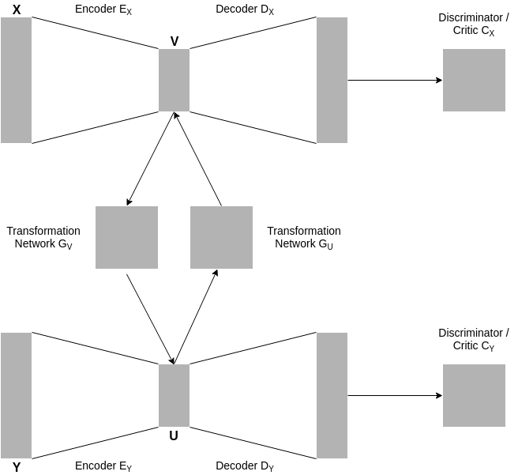

Neural Style Transfer with Deep Learning (Working Title)
Master's thesis (May 2019 - Present)
Similar to the CycleGAN architecture, the main purpose of this model is to define a mapping between two image domains X and Y without the use of paired training data. A key difference is that the mapping does not directly translate between the two image domains. Instead, two Autoencoders are incorporated into the model. Their aim is to transform the images from each domain into a low-dimensional representation. The mapping then occurs between the two low-dimensional spaces of the two domains. Both autoencoders are pretrained and fixed during the training procedure. The following figure shows the architecture.
Master's thesis (May 2019 - Present)
Similar to the CycleGAN architecture, the main purpose of this model is to define a mapping between two image domains X and Y without the use of paired training data. A key difference is that the mapping does not directly translate between the two image domains. Instead, two Autoencoders are incorporated into the model. Their aim is to transform the images from each domain into a low-dimensional representation. The mapping then occurs between the two low-dimensional spaces of the two domains. Both autoencoders are pretrained and fixed during the training procedure. The following figure shows the architecture.

The goal of the transformation network (generator) GV is to take a low-dimensional representation v of an image in X and translate
it to a low-dimensional representation û. Putting û through the decoder DY should yield an image ŷ that is
visually indistinguishable from images in Y. The transformation network DU has the same goal for the opposite direction.
The discriminator CY aims to distinguish between images from y from Y and generated images ŷ. The discriminator CX works analogously.
In addition to this adversarial training formulation, a cycle consistency constraint (Zhu et al., 2017) [1] is imposed on the architecture.
This constraint encourages images that are translated to the opposite domain and then translated back to look approximately like the original image.
All neural networks were implemented as convolutional neural networks. The experiments were implemented in Python together with PyTorch.
[1] Zhu J-Y, Park T, Isola P, and Efros AA. 2017.
Unpaired Image-to-Image Translation using Cycle-Consistent Adversarial Networks.
IEEE International Conference on Computer Vision (ICCV), pp.2242-2251.
Detecting Abnormalities in Clinical Data with Generative Adversarial Networks
Bachelor's thesis (April 2018 - August 2018)
Full version [PDF] Short version [PDF] Code [GitHub]
Detection of medical conditions or abnormalities in clinical data has already been achieved by employing discriminative models, especially neural networks. For example, neural networks have been trained as binary classifiers to learn a decision boundary that discriminates between normal and abnormal ECG recordings. The training process requires normal as well as abnormal ECG recordings. However, public ECG databases generally consist of many normal recordings and a few abnormal recordings. This circumstance served as the main incentive for my bachelor's thesis project, which was to train a generative adversarial network with only normal data and to then examine whether it would be capable of discriminating between normal and abnormal data.
During my research phase, I conducted two separate experiments. In one experiment, I examined whether generative adversarial networks are capable of detecting cardiac arrhythmia in ECG recordings. For this, I trained a generative adversarial network with normal ECG recordings. Afterwards I fed two separate test sets into the trained discriminator, one containing normal ECG recordings and the other containing arrhythmic ECG recordings. The hypothesis was that, because the discriminator was trained only on normal recordings, the loss would be larger for the test set containing arrhythmic recordings. For the other experiment, I repeated the procedure in order to examine whether generative adversarial networks, when given the blood gas measurements of a patient, can decide whether or not that patient has respiratory failure.
Bachelor's thesis (April 2018 - August 2018)
Full version [PDF] Short version [PDF] Code [GitHub]
Detection of medical conditions or abnormalities in clinical data has already been achieved by employing discriminative models, especially neural networks. For example, neural networks have been trained as binary classifiers to learn a decision boundary that discriminates between normal and abnormal ECG recordings. The training process requires normal as well as abnormal ECG recordings. However, public ECG databases generally consist of many normal recordings and a few abnormal recordings. This circumstance served as the main incentive for my bachelor's thesis project, which was to train a generative adversarial network with only normal data and to then examine whether it would be capable of discriminating between normal and abnormal data.
During my research phase, I conducted two separate experiments. In one experiment, I examined whether generative adversarial networks are capable of detecting cardiac arrhythmia in ECG recordings. For this, I trained a generative adversarial network with normal ECG recordings. Afterwards I fed two separate test sets into the trained discriminator, one containing normal ECG recordings and the other containing arrhythmic ECG recordings. The hypothesis was that, because the discriminator was trained only on normal recordings, the loss would be larger for the test set containing arrhythmic recordings. For the other experiment, I repeated the procedure in order to examine whether generative adversarial networks, when given the blood gas measurements of a patient, can decide whether or not that patient has respiratory failure.